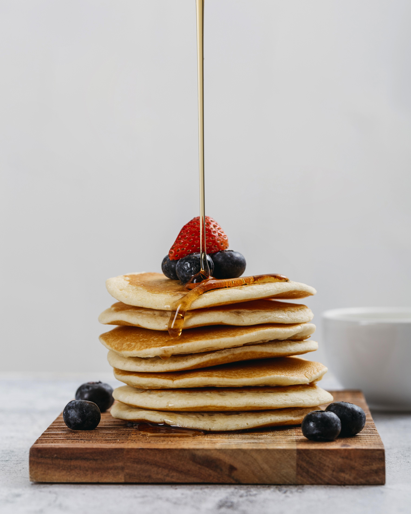

American Pancake

Photo by Freepik
Description
Treat yourself to the ultimate breakfast comfort with our fluffy American pancake recipe! These pancakes are a cherished American tradition, renowned for their soft, fluffy texture and deliciously satisfying flavor. Whether you are preparing a quiet brunch on the weekend or a quick treat during the week, this recipe will have you flipping perfectly browned pancakes in no time.
Ingredients
- 1 cup of all-purpose flour
- 2 tablespoons of granulated sugar
- 1 teaspoon of baking powder
- 1/2 teaspoon of baking soda
- 1/2 teaspoon of salt
- 1 cup of buttermilk
- 1 large egg
- 2 tablespoons unsalted butter, melted
- 1 teaspoon of vanilla extract
Steps
- Mix Dry Ingredients: In a large mixing bowl, whish together the flour, sugar, baking powder, baking soda, and salt. This creates the perfect base for those fluffy pancakes.
- Combine Wet Ingredients: In a separate bowl, whisk together the buttermilk, egg, melted butter, and vanilla extract. The buttermilk lends a delightful tangy flavor and helps create that sought-after fluffiness.
- Combine Wet and Dry: Pour the wet ingredients into the dry mixture and gently stir until just combined. Be cautious not to overmix; a few lumps in the batter are perfectly fine. Let the batter rest for 5 minutes to allow the leavening agents to work their magic.
- Preheat Griddle or Pan: Heat a non-stick griddle or skillet over medium heat and lightly grease it with a bit of butter or cooking spray. The key to even cooking is maintaining a consistent temperature.
- Cook the Pancakes: Using a 1/4 cup measuring cup, pour the batter onto the hot griddle. Cook until bubbles form on the surface (about 2-3 minutes), then flip and cook for another 1-2 minutes or until golden brown on both sides.
- Serve Warm: Stack those golden beauties on a plate, add your favorite toppings like fresh berries, maple syrup, or a dollop of whipped cream, and serve immediately. The warmth of these pancakes will melt your heart!